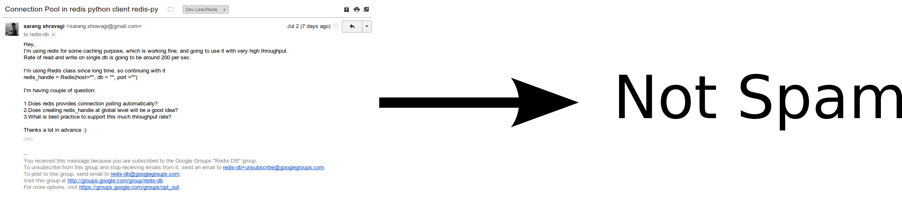

Attackers are automated at large scale.
Defenses must also become automated.
How do you classify good vs bad?
Our Job

Two class problem: spam and not spam.
General ML Steps
1Extract features
2Train a model
3Test using test set
4Use in real world
5[Optional] Refine model over time
Today?
Focus on: feature extraction
Build a Python-based tokenizer
Token: the unit we operate on (a single 'word' separated by whitespace)
Probability Notation
$P(x)$: The probability of random event $x$, range $[0,1]$
$P(x \mid y)$: The probability of random event $x$ given random event $y$
$P(x,y)$: The probability of random events $x$ and $y$
$P(x,y) = P(x) * P(y)$: For independent events $x$ and $y$
$\lvert X \rvert$: The number of elements in set $X$
Bayes' Theorem
$$ P(A \mid B) = \frac{P(B \mid A) * P(A)}{P(B)}$$
Conditional Independence
$$ P(A,D \mid B) = P(A \mid B) * P(D \mid B)$$
Bag of Words Model
Think of all words in the spam or not spam classes as a giant unordered set independent from each other within each class. Learn from all of them at once.
Naïve Bayes Classification
$$P(C \mid F_1, \ldots, F_n)$$
For us, we have two $c$ values in $C$: spam and not spam.
$$P(C = \text{spam} \mid F_1 = w_1, \ldots, F_n = w_n)$$
and,
$$P(C = \text{not spam} \mid F_1 = w_1, \ldots, F_n = w_n)$$
where each $w_i$ is a word occurring in a query document.
Apply Bayes' Theorem (spam)
$$ P(A \mid B) = \frac{P(B \mid A) * P(A)}{P(B)}$$
$$P(C = \text{spam} \mid F_1 = w_1, \ldots, F_n = w_n) = $$
$$\frac{P(F_1 = w_1, \ldots, F_n = w_n \mid \text{spam}) * P(\text{spam})}{P(F_1 = w_1, \ldots, F_n = w_n)}$$
Apply Independence Assumptions (naïve)
$$P(x,y) = P(x) * P(y)$$
$$ P(A,D \mid B) = P(A \mid B) * P(D \mid B)$$
$$\frac{P(F_1 = w_1, \ldots, F_n = w_n \mid \text{spam}) * P(\text{spam})}{P(F_1 = w_1, \ldots, F_n = w_n)} = $$
$$\frac{P(F_1 = w_1 \mid \text{spam}) * \cdots * P(F_n = w_n \mid \text{spam}) * P(\text{spam})}{P(F_1 = w_1) * \cdots * P(F_n = w_n)}$$
Cliff's Notes Version
$$P(C = \text{spam} \mid F_1 = w_1, \ldots, F_n = w_n) = $$
$$\frac{P(F_1 = w_1 \mid \text{spam}) * \cdots * P(F_n = w_n \mid \text{spam}) * P(\text{spam})}{P(F_1 = w_1) * \cdots * P(F_n = w_n)}$$
Maximum a Posteriori (MAP) Decision Rule
$$ \text{classify}(f_1,\ldots,f_n) = $$
$$\mathop{\text{argmax}}\limits_c P(C = c) \displaystyle\prod\limits_{i=1}^n P(F_i = f_i \mid C = c)$$
You can ignore the denominator as it is equivalent across classes for a given set of $f_i$ tokens.
Approximating Probabilities with Frequencies
1. $P(\text{spam}) = \frac{\lvert \text{spam} \rvert}{\lvert \text{spam} \rvert + \lvert \text{not spam} \rvert}$
2. $P(\text{not spam}) = \frac{\lvert \text{not spam} \rvert}{\lvert \text{spam} \rvert + \lvert \text{not spam} \rvert}$
3. $P(w_i \mid \text{spam}) = \frac{\lvert w_i \text{ in spam}\rvert}{\lvert \text{spam} \rvert}$
4. $P(w_i \mid \text{not spam}) = \frac{\lvert w_i \text{ in not spam} \rvert}{\lvert \text{not spam} \rvert}$
How do we get these values?
You literally count the words in emails
So, let's start getting words!